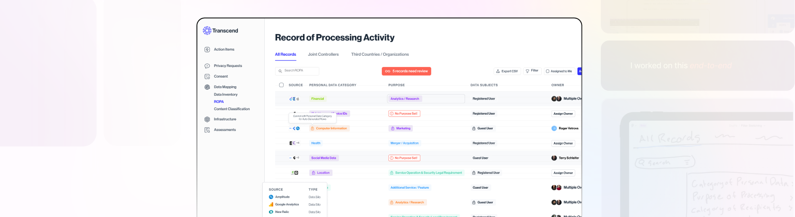
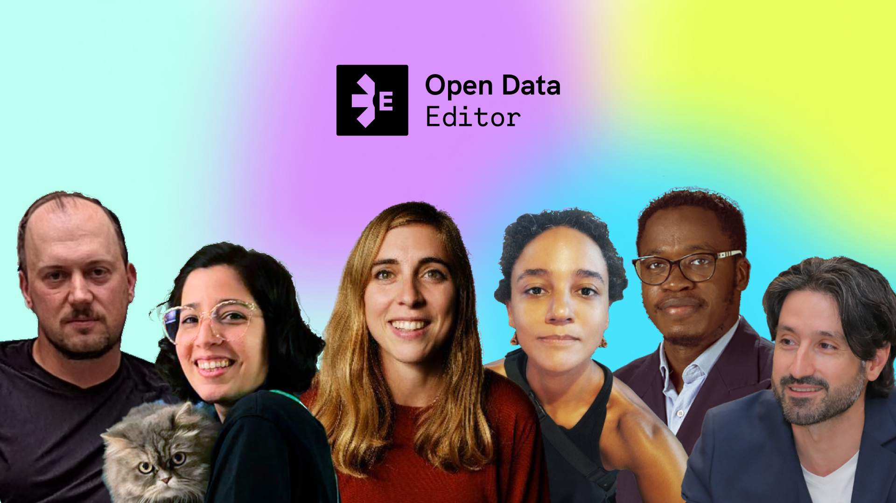
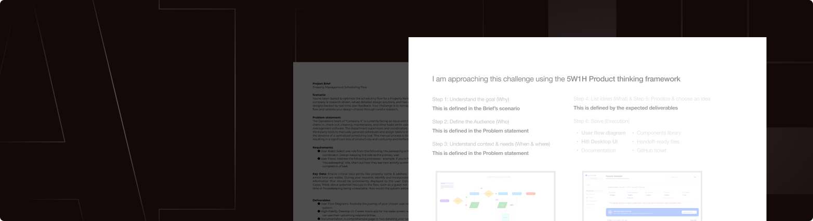
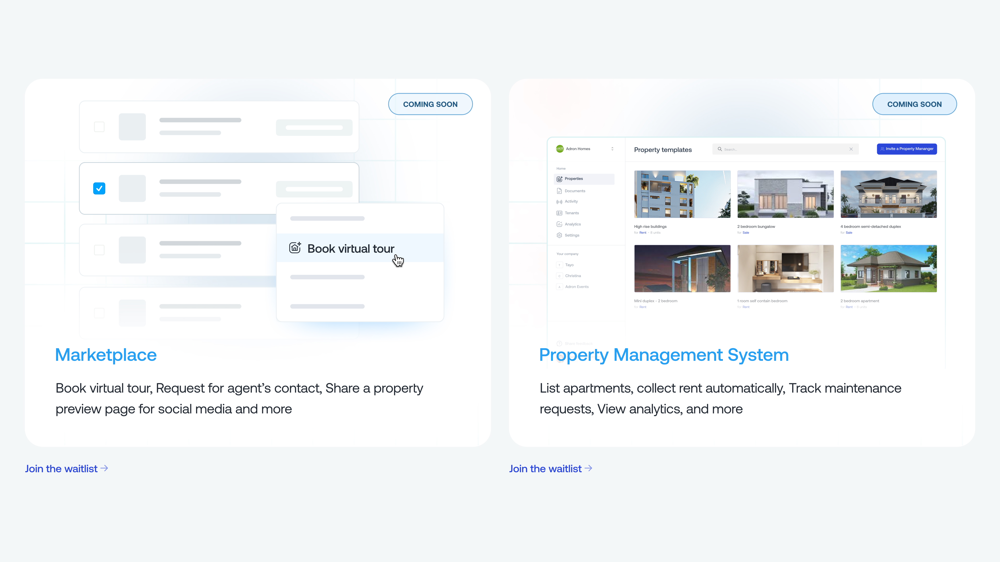

WebGL Gradient
Gradient exploration done with WebGL and perlin noise.

Transcend.io's ROPA
Screensavers

OKFN

Transcend.io's ROPA
Transcend - enterprise B2B Data Governance

Qacehomes - real estate
Vanitylvrs
Transcend.io's ROPA
Partcloud - software agency

Qacehomes - Real estate
AI fluency: Solving a Design challenge